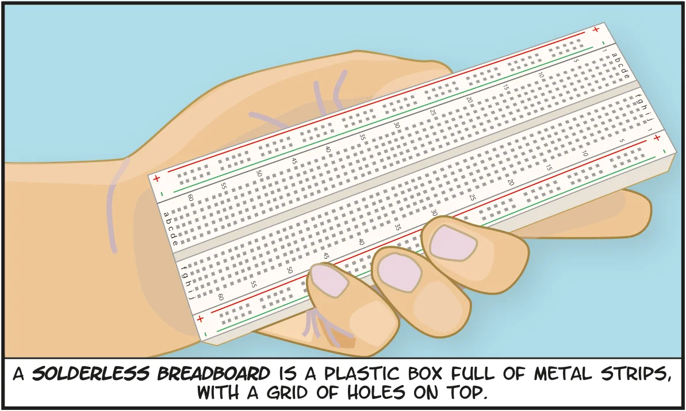
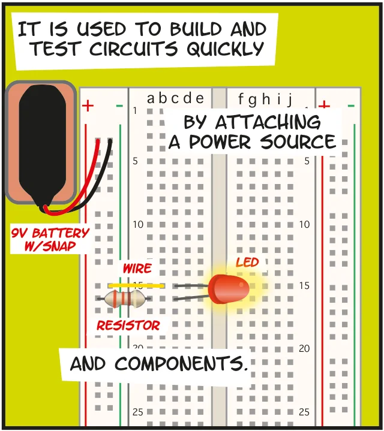
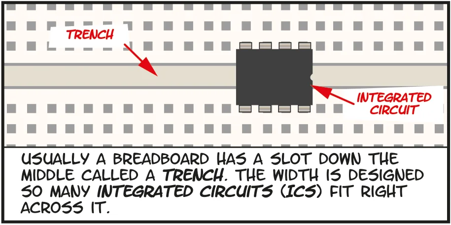
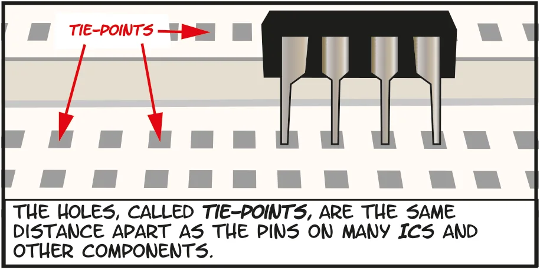
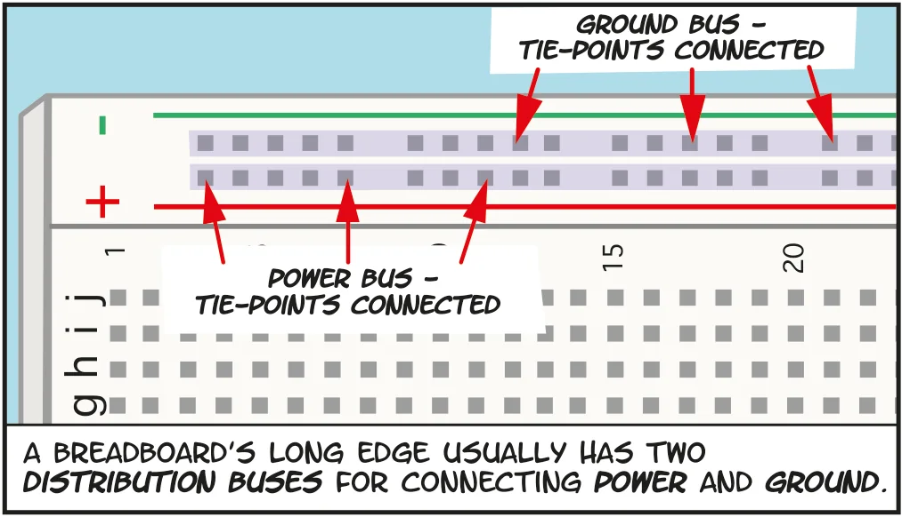
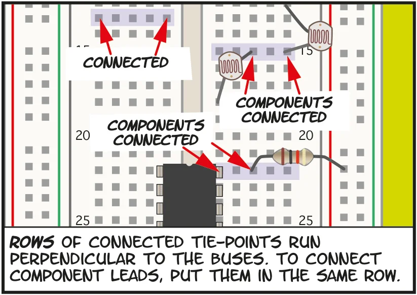
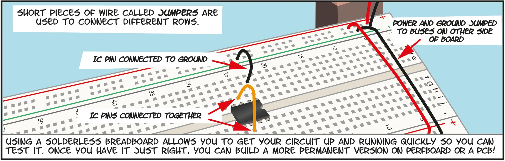
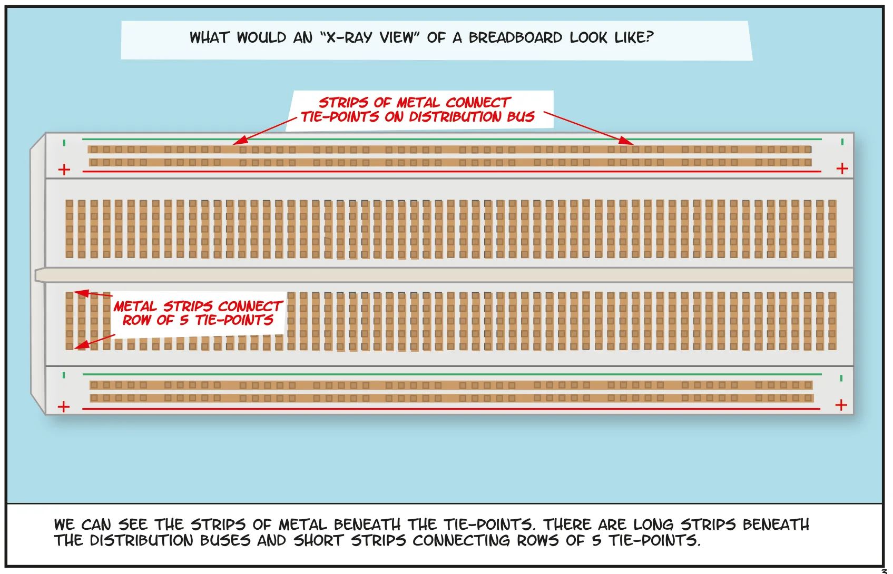
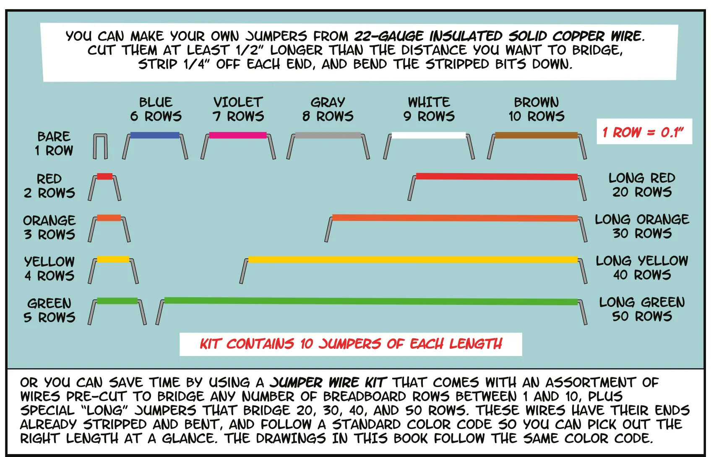

A solderless breadboard is a plastic box full of metal strips, with a grid of holes on top.

It is used to build and test circuits quickly
By attaching a power source
And components.

Usually a breadboard has a slot down the middle called a trench. The width is designed so many integrated circuits (ICs) fit right across it.

The holes, called tie-points, are the same distance apart as the pins on many ICs and other components.

A breadboard’s long edge usually has two distribution buses for connecting power and ground.

Rows of connected tie-points run perpendicular to the buses. To connect component leads, put them in the same row.

Short pieces of wire called jumpers are used to connect different rows.
Using a solderless breadboard allows you to get your circuit up and running quickly so you can test it. Once you have it just right, you can build a more permanent version on perfboard or a PCB!

What would an “x-ray view” of a breadboard look like?
We can see the strips of metal beneath the tie-points. There are long strips beneath the distribution buses and short strips connecting rows of 5 tie-points.

You can make your own jumpers from 22-gauge insulated solid copper wire. Cut them at least ½″ longer than the distance you want to bridge, strip ¼″ off each end, and bend the stripped bits down.
Standard colours: bare = 1 row, red = 2, orange = 3, yellow = 4, green = 5, blue = 6, violet = 7, gray = 8, white = 9, brown = 10 rows; long red = 20, long orange = 30, long yellow = 40, long green = 50 rows. 1 row = 0.1″. The kit contains 10 jumpers of each length.
Or you can save time by using a jumper wire kit that comes with an assortment of wires pre-cut to bridge any number of breadboard rows between 1 and 10, plus special “long” jumpers that bridge 20, 30, 40, and 50 rows. These wires have their ends already stripped and bent, and follow a standard color code so you can pick out the right length at a glance. The drawings in this book follow the same color code.